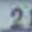

About this code
Getting started
This package supports three digit classification models:
Model |
Dataset |
Input |
|---|---|---|
|
MNIST — handwritten digits |
Greyscale images |
|
USPS — postal digits |
Greyscale images |
|
SVHN — street view house numbers |
Colour (RGB) images |
All you need is a terminal (command prompt) and Python 3.10 – 3.12. Follow the steps below in order.
Step 1 — Install the package
Open a terminal and run:
pip install ccexam
Step 2 — Get a sample image to try
Sample images are bundled with the package — no download needed. Use the samples: prefix followed by a filename:
ccexam-infer --model svhn --input samples:svhn_digit_5.png # street view house numbers
ccexam-infer --model mnist --input samples:mnist_test_0_label_7.png # handwritten digits
ccexam-infer --model usps --input samples:usps_digit_1.png # postal digits
--model selects which classifier to use: svhn, mnist, or usps. Pick the one that matches your image type.
The tool will print the digit (0–9) it thinks is in the image.
Step 3 — No image handy? Download a sample below
Download one of these example images and save it to your computer, then pass its path to the tool:
SVHN — house-number digit (--model svhn):
{kind=link}

{kind=link}
MNIST — handwritten digit (--model mnist):
{kind=link}
Download mnist_test_1_label_2.png
{kind=link}
USPS — postal digit (--model usps):
{kind=link}
{kind=link}
ccexam-infer --model svhn --input /path/to/your/image.png
Step 4 — Classify multiple images in a folder
To classify all images in a folder at once:
ccexam-infer --model svhn --input path/to/your/folder
Save predictions to a CSV file with --output:
ccexam-infer --model svhn --input path/to/your/folder --output path/to/your/output_file.csv
By default the tool picks the best available device. Override with --device:
ccexam-infer --model svhn --input /path/to/your/image.png --device cpu # any machine
ccexam-infer --model svhn --input /path/to/your/image.png --device mps # Apple Silicon Mac
ccexam-infer --model svhn --input /path/to/your/image.png --device cuda # NVIDIA GPU
Available models: mnist, usps, svhn — pick whichever matches your images.
More options — What inputs are accepted?
Image file — --input /path/to/image.png
Detected by content, not extension. Works with any extension or no extension at all. Non-images are rejected with an Invalid input message.
ASCII-art digit — --input digit.txt or --input digit.ascii
Auto-detected and converted before inference. Foreground chars: # X 1 @ *; background: . space 0 -. All rows must be the same width. Results are best-effort.
Folder — --input /path/to/folder/
Classifies every readable image inside. Unreadable files are skipped silently.
Need help?
Run
ccexam-infer --helpto see all available arguments and their descriptions.Make sure Python 3.10 – 3.12 is installed — check with
python --version.If
ccexam-inferis not found after installing, close and reopen your terminal. If it still fails, use the module form as a fallback — it works regardless ofPATH:python -m ccexam.inference --model svhn --input /path/to/image.png
For further questions, reach out to the team listed on the Individual contributions page.